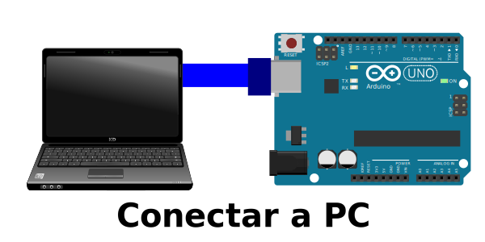

Enn este repositorio hay algunos ejemplos de como utilizar arduino. algunos apuntes sobre que hacer para iniciar con esta plataforma, y algunos casos sencillos de uso
Escrito por EDWIN SAUL también consulta el Repositorio Github donde podrás ver los archivs del proyecto
Este modulo se encarga de colocar un ejemplo en serial contenedor y correrlo
imagenes de Wikimedia Conmomns. Libro consultado pagina Alojada gracias a github pages .